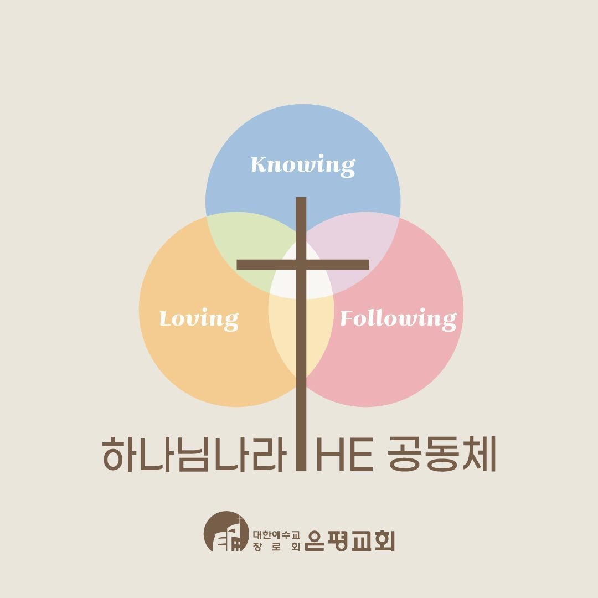

✝

젊은이예배 2026 상반기 웰커밍데이
순서
지목기
1
자기소개
2
신앙 & 관계
3
일상 & 고민
4
연애 & 결혼
5
꿈 & 방향성
1 of 5 Categories
이 카테고리 랜덤 질문 뽑기!
💡 상단의
랜덤 질문 뽑기
를 누르면 하나의 질문이 랜덤으로 스포트라이트 됩니다.
이전 카테고리
다음 카테고리
아이스브레이킹: 순서 지목기
누가 먼저 나눔을 시작할지 랜덤으로 정해 드립니다!
조원 이름 목록 (쉼표로 구분)
🎯 버튼을 눌러 순서를 지목해보세요!
랜덤 지목하기!